https://www.youtube.com/watch?v=WE0hyo6TzMk&t=1490s
Is besteld, nog niet getest
werkt vermoedelijk op basis van adiabatische verdamping
afhankelijk van benodigde hoeveelheid water eventueel grondwater gebruiken
Daling: Pomp Uit, bervoren flesje erin
T_Uitstroom gaat mee, maar is waarschijnlijk niet reeël, omdat deze in de lucht boven het water hangt.
Verbazingwekkend hoe snel de Uitstroom temperatuur echt koud is.
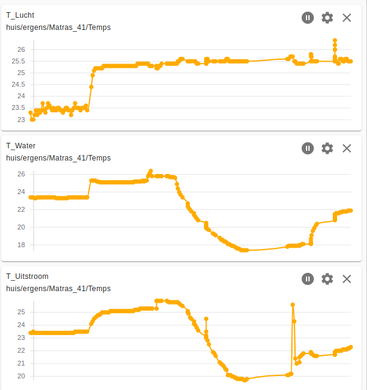
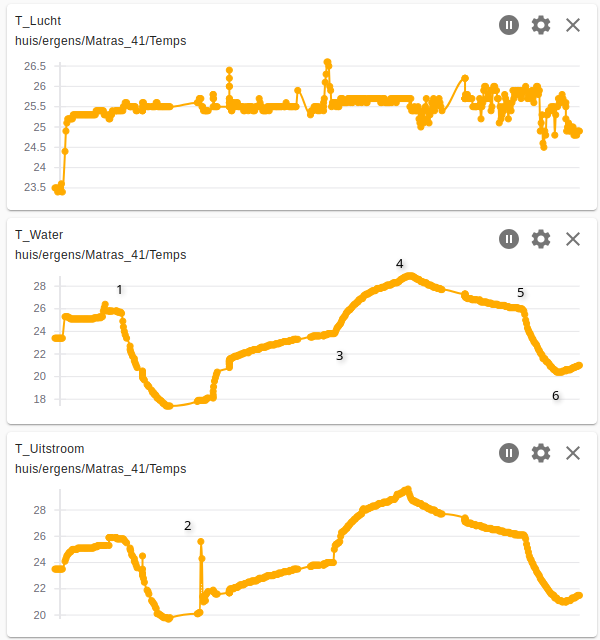
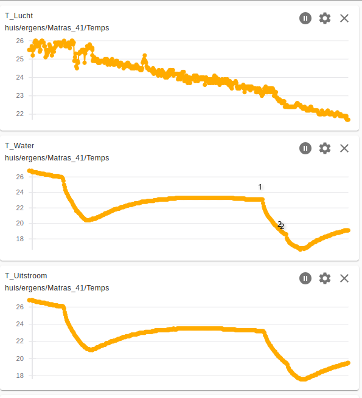
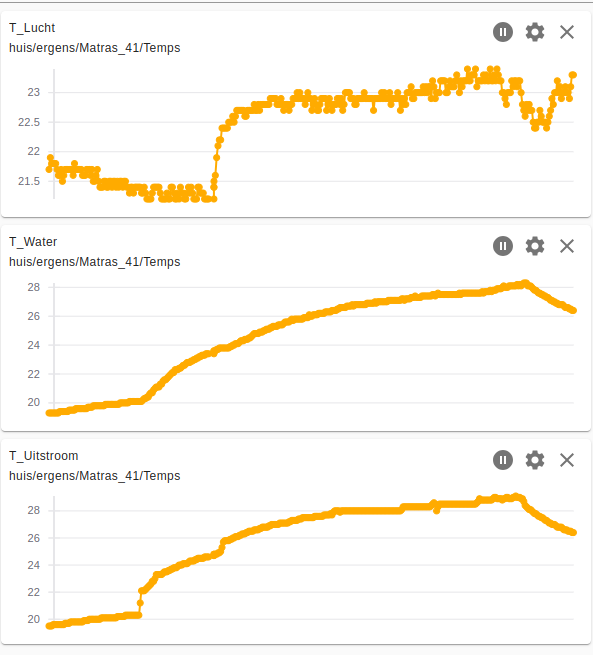
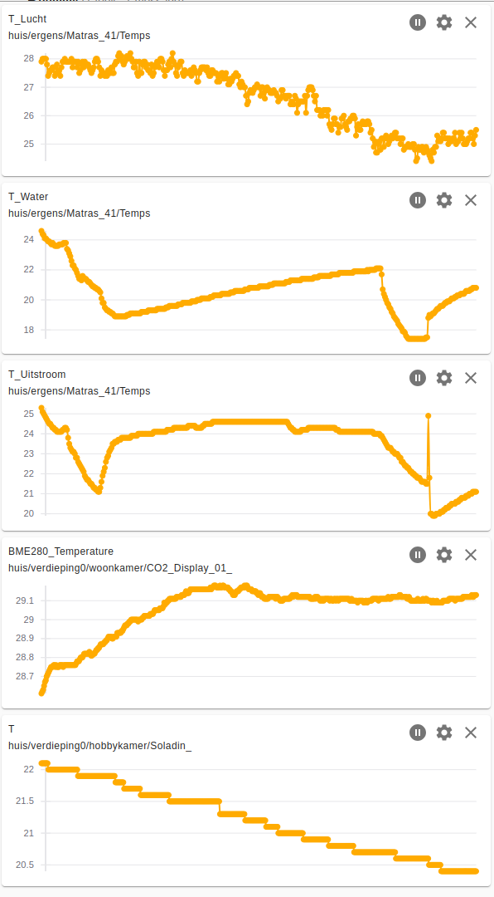
Muren buiten water gekoeld
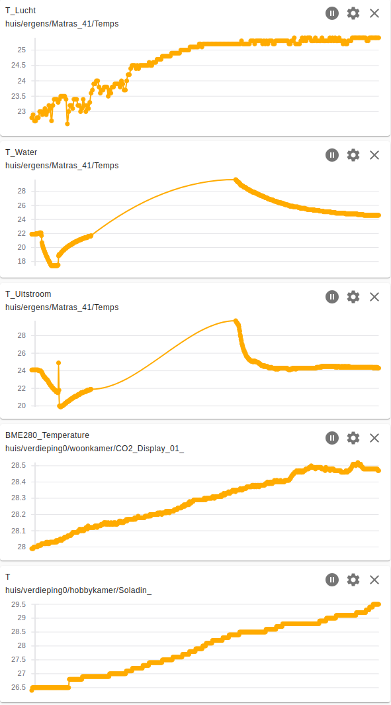
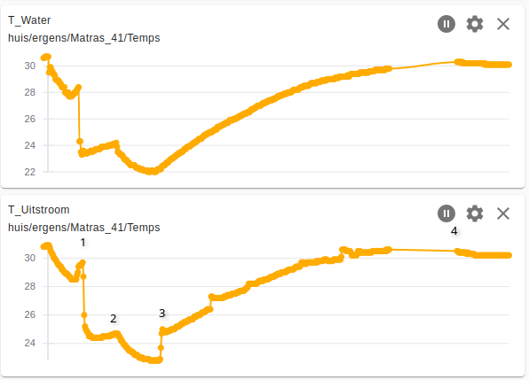
Inhoud = 27 liter
1. vullen met vers water, 24.4 °C, dus komt al niet echt koud uit de kraan
2. ruim 1 liter icepack uit de diepvries, temperatuur T_Water daalt van 24.2 °C naar 22.0 °C in 1:05
3. naar Bed, matras is net te doen, veel kouder zou ik het niet willen hebben
4. Opstaan, matras voelt nog lekker koel aan, T_Water is gestegen van 22.0 °C naar 30.3 °C in 7:20 en lijkt nog niet uitgestegen, straks nakijken in echte signaal. T_Lucht = 31.2°C
Dus van 30°C naar 22°C schat ik dat je 4 tot 5 liter icepacks moet hebben
Capaciteit lijkt inderdaad genoeg
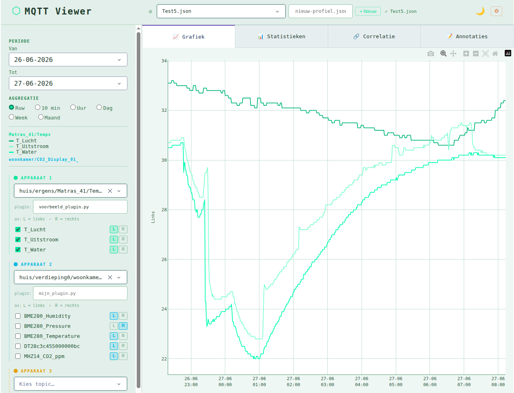
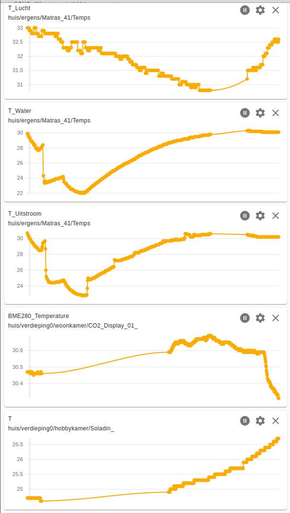
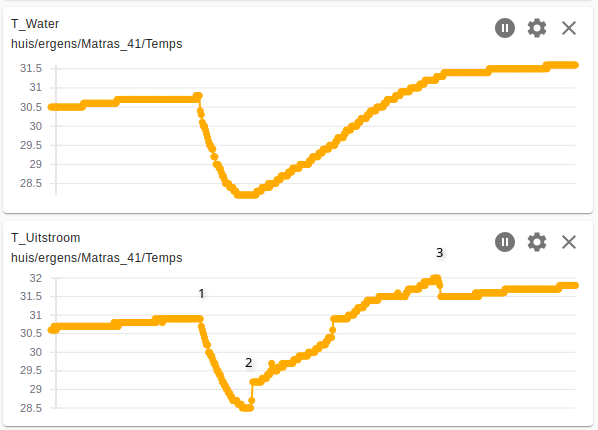
Grote Koelblok:
in 30 minuten van 29.4°C naar 21.4°C = 8°C / 30 min
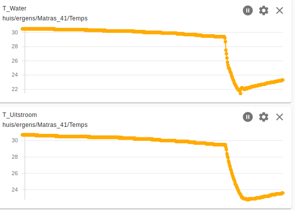
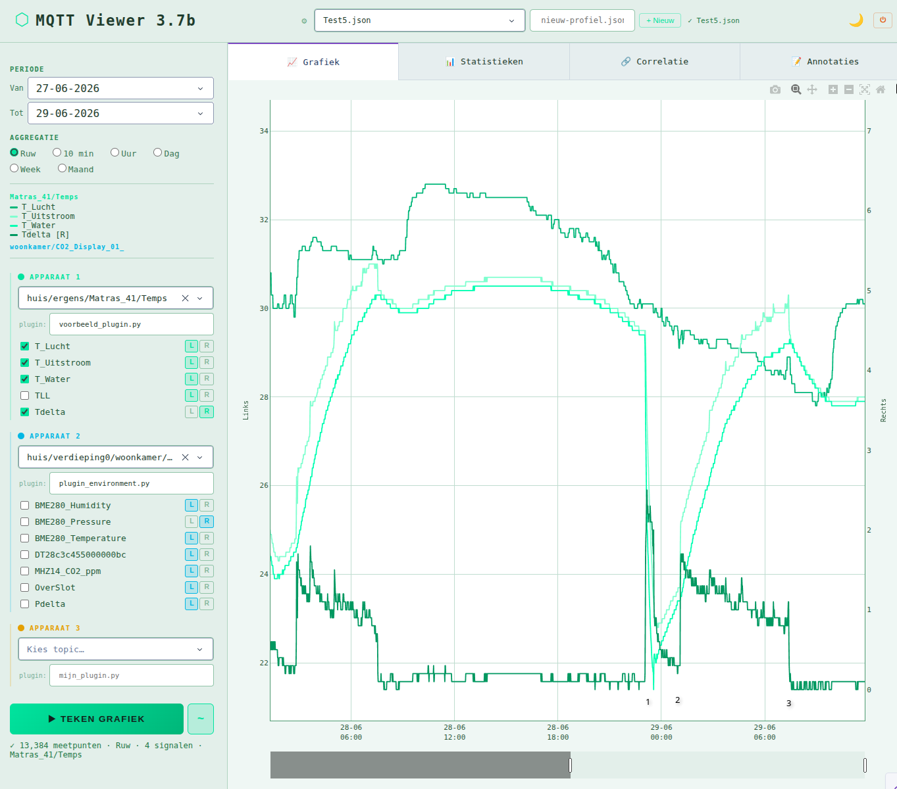